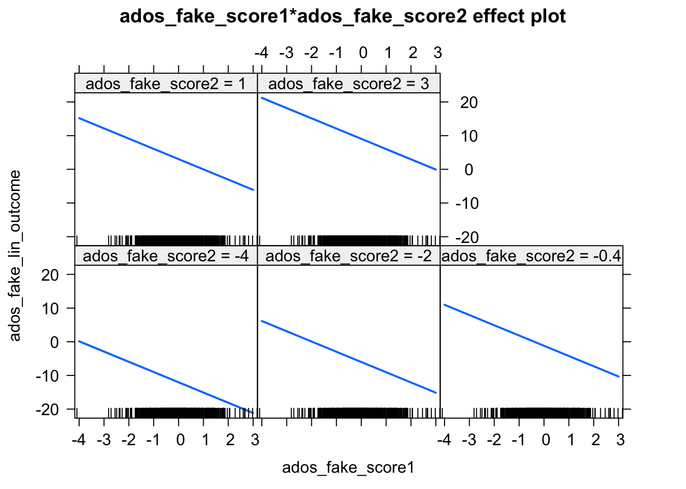
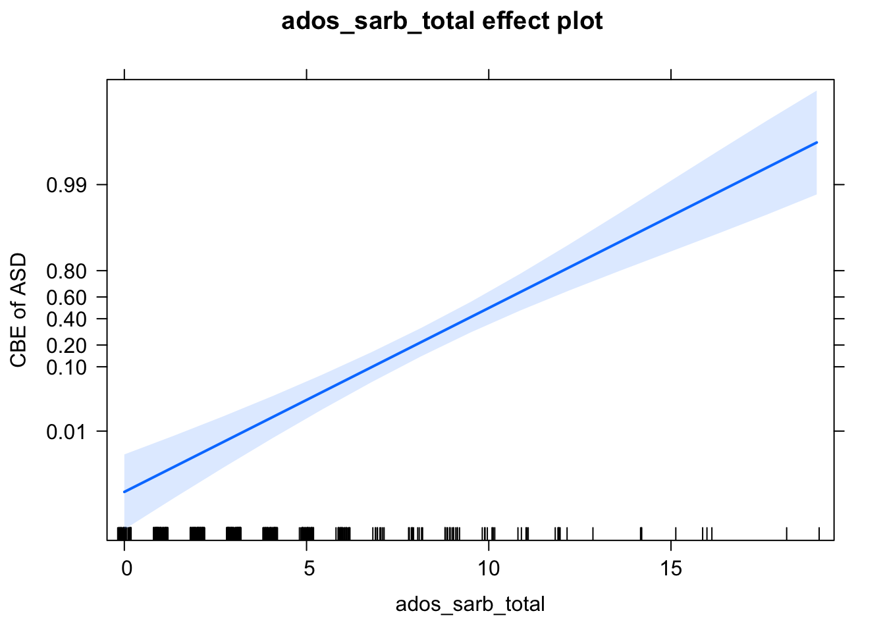
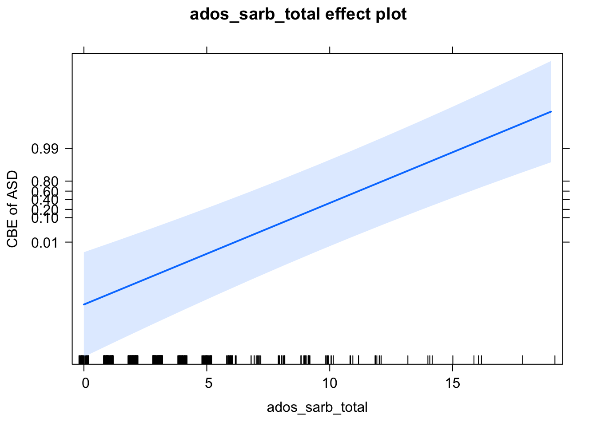

Chapter 5 Data Analysis
5.1 Read in Data
- Our input data will be a scored version of the artificial ADOS Module 2dataset with some fake columns to demonstrate how to use R to perform specific data analyses.
adosm2 <- read.csv('./datasets/adosm2_scored.csv',
stringsAsFactors = FALSE)5.2 Basic Stats functions
5.2.1 Mean, Median, Standard Deviation, Summary
mean(adosm2$ados_sarb_total, na.rm = TRUE)## [1] 3.488117median(adosm2$ados_sarb_total, na.rm = TRUE)## [1] 3sd(adosm2$ados_sarb_total, na.rm = TRUE)## [1] 3.02392summary(adosm2$ados_sarb_total)## Min. 1st Qu. Median Mean 3rd Qu. Max.
## 0.000 1.500 3.000 3.488 4.000 19.0005.2.2 Chi Squared Test
chisq.test(table(adosm2$cbe_36, adosm2$recruitment_group))## Warning in chisq.test(table(adosm2$cbe_36, adosm2$recruitment_group)): Chi-
## squared approximation may be incorrect##
## Pearson's Chi-squared test
##
## data: table(adosm2$cbe_36, adosm2$recruitment_group)
## X-squared = 15.284, df = 4, p-value = 0.0041475.3 Linear Regression
5.3.1 Correlation
- Find correlation between two vars
cor.test(adosm2$ados_fake_score1, adosm2$ados_fake_lin_outcome)##
## Pearson's product-moment correlation
##
## data: adosm2$ados_fake_score1 and adosm2$ados_fake_lin_outcome
## t = -22.232, df = 545, p-value < 2.2e-16
## alternative hypothesis: true correlation is not equal to 0
## 95 percent confidence interval:
## -0.7311983 -0.6429767
## sample estimates:
## cor
## -0.68963785.3.2 Creating a Linear Regression Model
- We use the
lm()functionn to create a Linear Regression Model - The first parameter takes in an equation of the form:
dependentVar ~ predictor1 + predictor2 + ...- So the dependentVar is a function of the predictor variables
- In order to use column names as variables in this eq., the
dataparameter takes in a dataframe as input.
# To demonstrate a linear model, we use fake ados columns within the ados
# dataframe
linearMod <-
lm(ados_fake_lin_outcome ~ ados_fake_score1 + ados_fake_score2,
data=adosm2)5.3.3 Residuals, P-Values, Coefficients, with summary()
summary(linearMod)##
## Call:
## lm(formula = ados_fake_lin_outcome ~ ados_fake_score1 + ados_fake_score2,
## data = adosm2)
##
## Residuals:
## Min 1Q Median 3Q Max
## -2.75987 -0.68070 0.04043 0.65436 3.11995
##
## Coefficients:
## Estimate Std. Error t value Pr(>|t|)
## (Intercept) 0.01635 0.04233 0.386 0.7
## ados_fake_score1 -3.04059 0.04225 -71.970 <2e-16 ***
## ados_fake_score2 3.01164 0.04292 70.176 <2e-16 ***
## ---
## Signif. codes: 0 '***' 0.001 '**' 0.01 '*' 0.05 '.' 0.1 ' ' 1
##
## Residual standard error: 0.9894 on 544 degrees of freedom
## Multiple R-squared: 0.9478, Adjusted R-squared: 0.9476
## F-statistic: 4942 on 2 and 544 DF, p-value: < 2.2e-165.3.4 Plotting the Linear Model
# create effects object
plot(effects::Effect(c('ados_fake_score1'), linearMod))
plot(effects::Effect(c('ados_fake_score2'), linearMod))
plot(effects::Effect(c('ados_fake_score1', 'ados_fake_score2'), linearMod))
5.4 Logistic Regression
adosm2$cbe_asd <- ifelse(adosm2$cbe_36 %in% c('Autism', 'ASD'), 'ASD', 'Non-ASD')
adosm2$cbe_asd <- as.factor(adosm2$cbe_asd)
adosm2$cbe_asd <- relevel(adosm2$cbe_asd, ref = 'Non-ASD')
mod <- glm(cbe_asd ~ 1 + ados_sarb_total,
data = adosm2,
family = 'binomial')
eff <- effects::Effect(c('ados_sarb_total'), mod)
plot(eff,
axes = list(
y = list(
lab = 'CBE of ASD',
ticks = list(at = c(.01, .1, .2, .4, .6, .8, .99))))
)
5.5 Mixed Effects Models
5.5.1 Mixed Effects Logistic Regression
# analyze- logistic regression mixed effects
adosm2$cbe_asd <- ifelse(adosm2$cbe_36 %in% c('Autism', 'ASD'), 'ASD', 'Non-ASD')
adosm2$cbe_asd <- as.factor(adosm2$cbe_asd)
adosm2$cbe_asd <- relevel(adosm2$cbe_asd, ref = 'Non-ASD')
mod <- lme4::glmer(cbe_asd ~ 1 + (1|visit) + ados_sarb_total,
data = adosm2,
family = 'binomial')
eff <- effects::Effect(c('ados_sarb_total'), mod)
plot(eff,
axes = list(
y = list(
lab = 'CBE of ASD',
ticks = list(at = c(.01, .1, .2, .4, .6, .8, .99))))
)